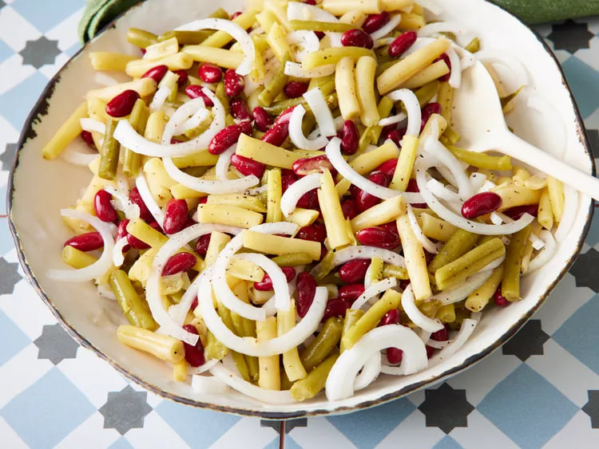

Three bean salad

Ingredients
- 1 (15 ounce) can green beans
- 1 pound wax beans
- 1 (15 ounce) can kidney beans, drained and rinsed
- 1 onion, sliced into thin rings
- ¾ cup white sugar, or to taste
- ⅔ cup distilled white vinegar
- ⅓ cup vegetable oil
- ½ teaspoon salt
- ½ teaspoon ground black pepper
- ½ teaspoon celery seed
Directions
- Step 01 -
Gather all ingredients.
- Step 02 -
Mix together green beans, wax beans, kidney beans, onion, sugar, vinegar, vegetable oil, salt, pepper, and celery seed. Chill in refrigerator for at least 12 hours.
- Step 03 -
Enjoy!
Back to home